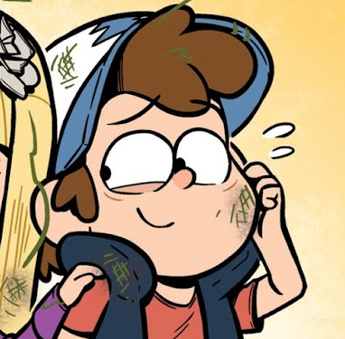

About Me:My name is Zed Suarez and I'm an aspiring 16 year old artist. I've been into art for about a decade(?), and I've been doing digital art since I was 8-9. So, about half my lifetime already. Art has always been something I enjoyed to do in my spare time, and I still do. I can't actually remember what exactly got me into art in the first place, but I think that's fine. All that matters is that I like it and that's good enough for me.
I'm inspired by countless of artists, whether it be my friends around me or works I see online because they motivate me to improve on my art and to continue making art :]
I'm hoping to one day be good enough at art to possibly score a job regarding it. I've a lot to work on still, like drawing poses and rendering in general. One day.
Hobbies:
- Drawing/Sketching
- Crochet & Sewing
- Reading
- Playing games?
- Playing instruments (Piano, Guitar)
Likes:
- Games: Stardew Valley, Ace Attorney
- Movies? I don't really watch a lot of them:
^ Project Hail Mary, Resident Evil (2026) is pretty cool
- Music! Tally Hall, Fall Out Boy, Eric Christian
- Books: Project Hail Mary, The Martian